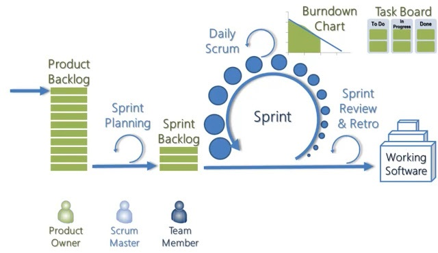
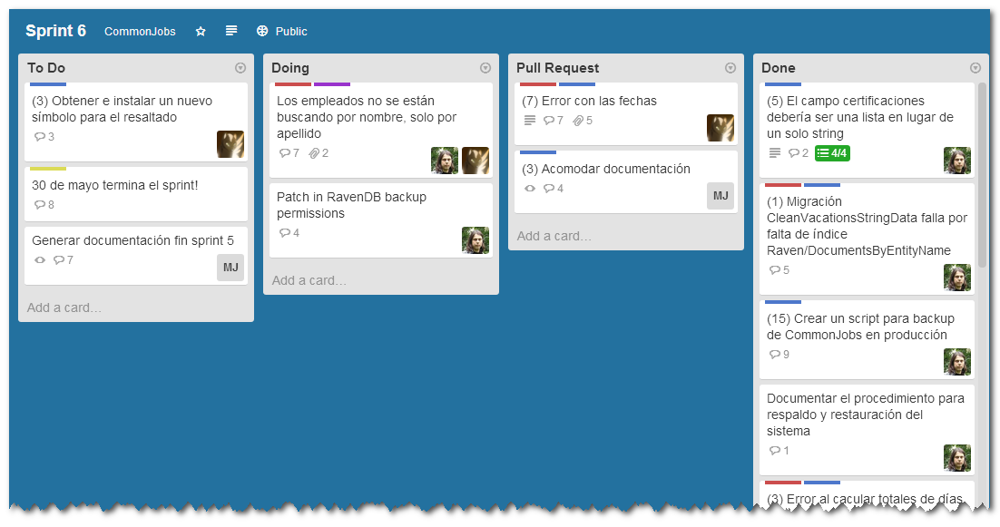
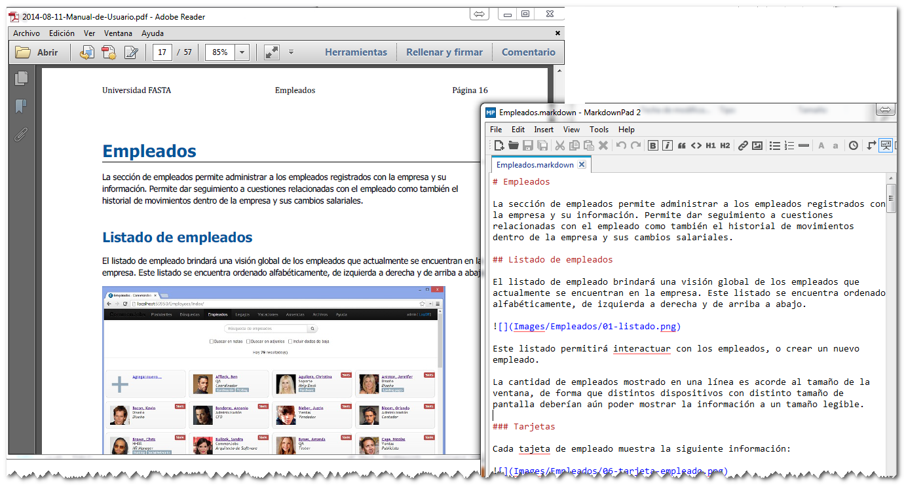
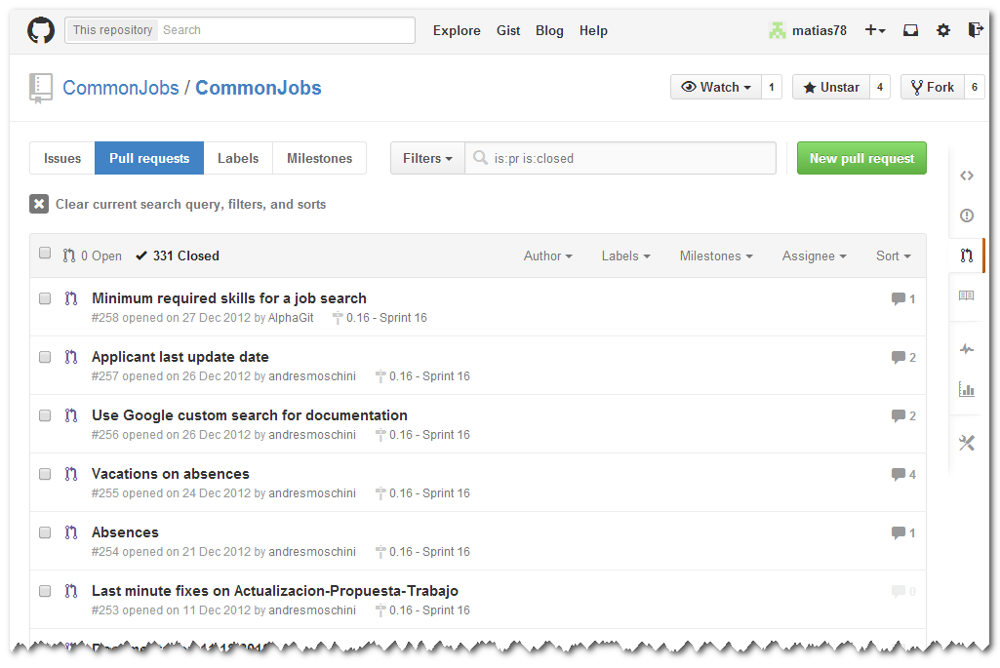
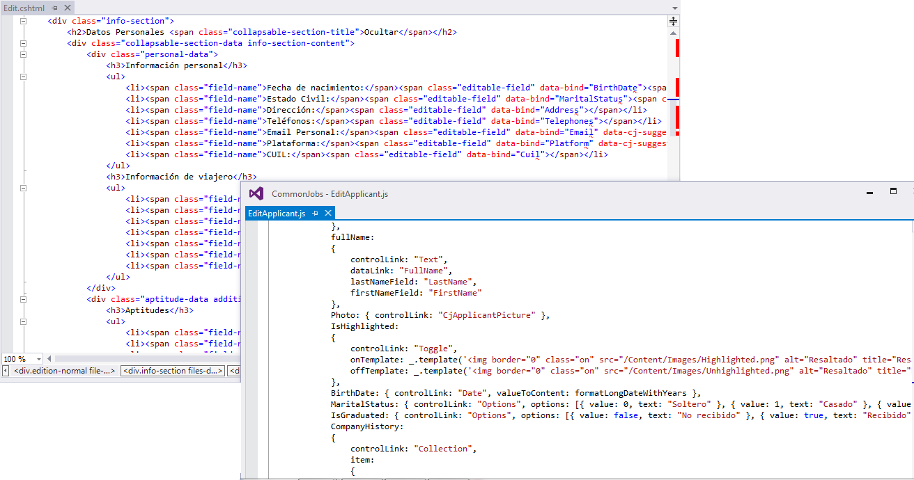
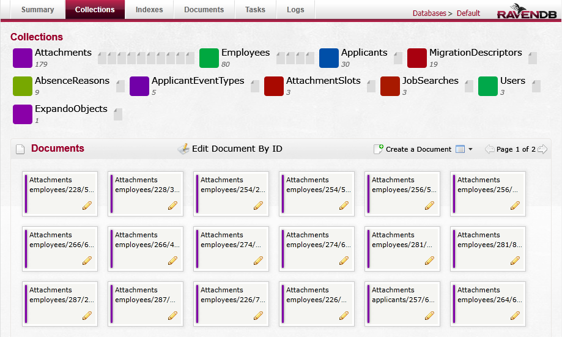
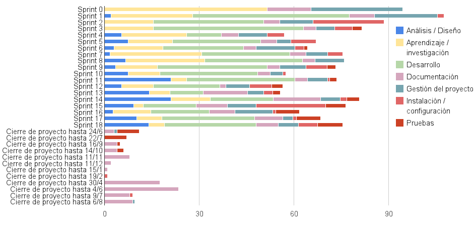

Agenda
- ¿Por qué, qué y quién?
- MakingSense (5 min)
- El desafío (5 min)
- CommonJobs (10 min)
- Proyecto: ¿Cómo? (45 mins)
- Proceso: la idea original
- Proceso: ya establecido
- Herramientas: Backlog y tracking (Trello)
- Herramientas: Documentación (mmd2pdf)
- Herramientas: git & GitHub
- Tecnologías: ASP.NET MVC 3
- Tecnologías: Backbone.js & nervoustissue
- Tecnologías: RavenDB
Agenda (cont.)
- Desafíos (5 mins)
- Cambio de rumbo del proyecto (10 mins)
- Métricas (10 mins)
- Conclusiones (10 mins)
- Lecciones aprendidas (10 mins)
- Preguntas y respuestas (15 mins)
¿Por qué, qué y quién?
¿Por qué, qué y quién?
MakingSense
- Empresa de software Marplatense
- Se ha extendido mucho en los últimos años
- Nuevas formas de organizarse, nuevos roles y departamentos
¿Por qué, qué y quién?
El desafío
Manejo de empleados: no es una tarea simple
¿Por qué, qué y quién?
El desafío
Algunas de las tareas que los HR managers realizan día a día:
- Seguimiento de empleados y resolución de problemas
- Contacto y seguimiento de postulantes a distintas ofertas de trabajo
- Evaluación de remuneraciones
- Seguimiento de presentismo y vacaciones
- Mantenimiento de legajos
- Evaluación de posibilidades de crecimiento
- Compartir datos con otras áreas de la empresa
¿Por qué, qué y quién?
CommonJobs
El proyecto consistió en desarrollar e implantar un sistema informático que:
- Simplifique la administración y búsqueda en legajos de empleados
- Realice el cálculo de vacaciones
- Brinde información sobre las licencias otorgadas a los empleados, para facilitar la toma de decisiones
- Permita administrar los datos personales de postulantes
- Facilite el seguimiento y la selección de candidatos a puestos de trabajo según sus capacidades y datos académicos
- Administre los almuerzos diarios de la empresa
Proyecto: ¿Cómo?
Proyecto: ¿Cómo?
Proceso: la idea original

Proyecto: ¿Cómo?
Proceso: ya establecido
Nuestras modificaciones al proceso:
- Distribuido e independiente para los participantes
- Documentación obligatoria para cada sprint
- Registro de horas, pero estimación en puntos
- Meetings menos y menos frecuentes, luego según lo necesario
Proyecto: ¿Cómo?
Herramienta: backlog y tracking (Trello)

Proyecto: ¿Cómo?
Herramienta: documentación (mmd2pdf)

Proyecto: ¿Cómo?
Herramienta: git & GitHub

Proyecto: ¿Cómo?
Tecnologías: ASP.NET MVC 3

Proyecto: ¿Cómo?
Tecnologías: Backbone.js & nervoustissue

Proyecto: ¿Cómo?
Tecnologías: RavenDB

Desafíos
Desafíos
- Tiempo disponible
- Trabajo distribuido
- Desconocimiento del dominio del problema a atacar
- Tecnologías nuevas
Cambio de rumbo del proyecto
Cambio de rumbo del proyecto
Durante el desarrollo del proyecto, detectamos que el producto final no estaba satisfaciendo las necesidades del cliente.
- Replanteo de requerimientos y necesidades
- Ajuste de los objetivos específicos
- Mayor foco en la necesidad inmediata
Métricas
Métricas:
Horas planeadas vs dedicadas

Métricas: Horas por actividad

Métricas:
Horas por actividad por sprint

Métricas:
Horas por persona por actividad

Conclusiones
Lecciones aprendidas
- Lo importante de comprender el dominio, y las necesidades no-explicitadas
- La utilización de buenas prácticas, herramientas adecuadas para cada proyecto
- El proceso como framework de trabajo y no sólo una herramienta más
- Tecnologías y herramientas: git, github, markdown, backbone, No-SQL
- Habilidades: Relevamiento de requerimientos, análisis de dominio, entrevistas con stakeholders secundarios, trabajo distribuído y comunicación concisa, documentación de proceso
¡Gracias!
¿Preguntas?